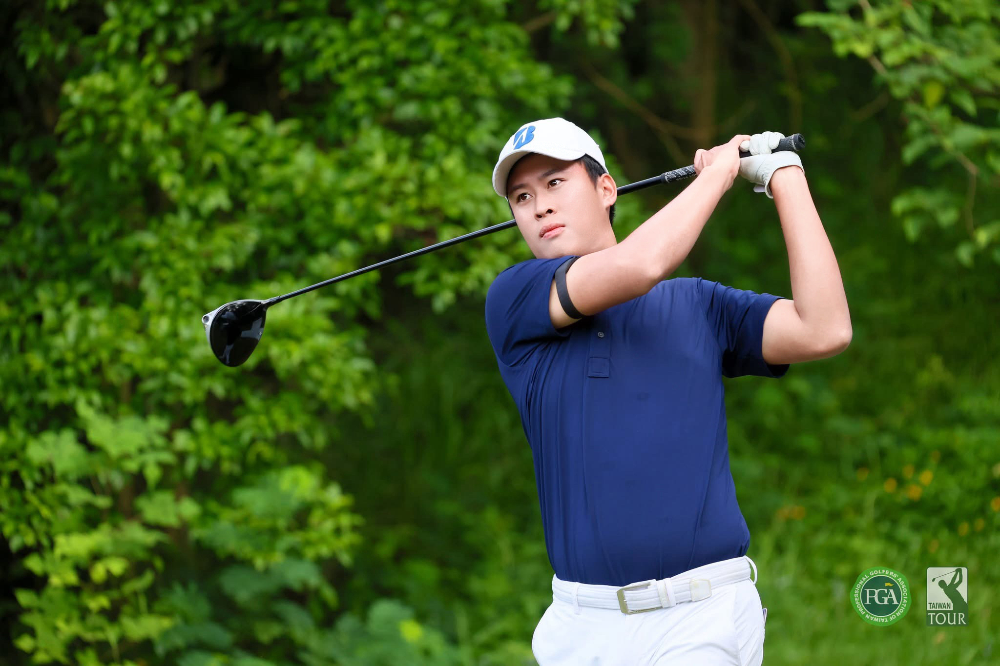
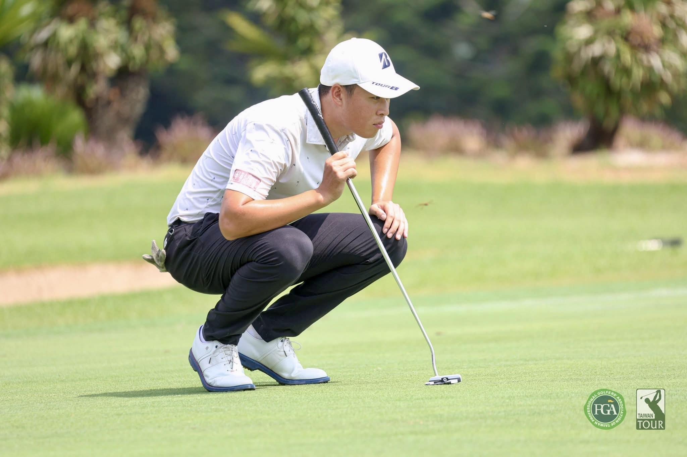
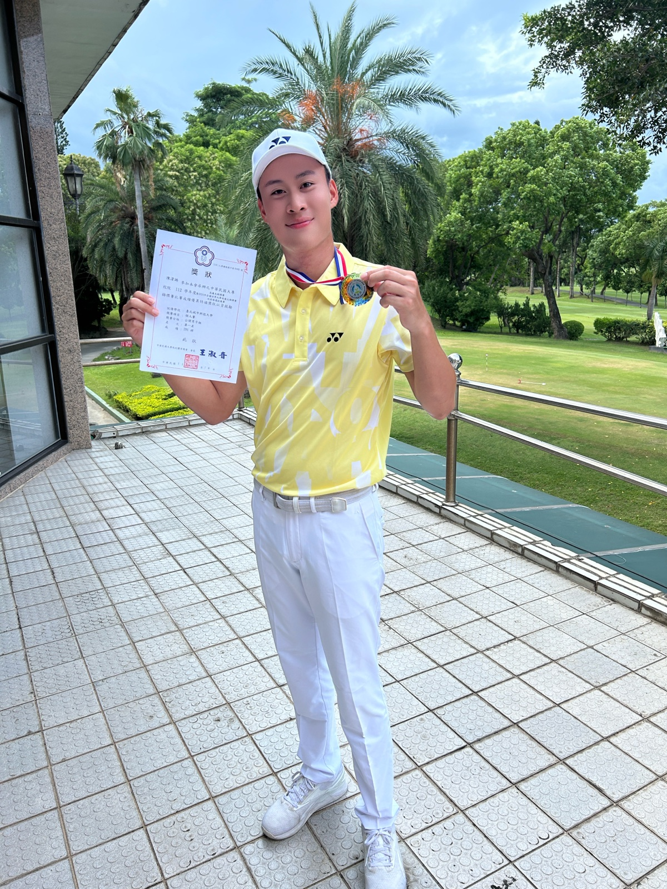

TPGA 職業選手 · 一對一私人教練 · 身體與揮桿評估
揮桿，本該這麼輕鬆。
不講複雜難懂的術語。從你的身體活動度與擊球習慣出發，
用最簡單的體感，打出穩定、紮實且不受傷的每一桿。

PERSONALIZED COACHING
為什麼練習場打再多球，下場還是不穩？ 因為每個人的身體柔軟度與發力順序都不同。強行套用別人的揮桿模板，只會讓動作越來越僵硬。
零基礎新手入門。
從握桿、站姿到發力順序，一開始就建立正確、流暢且不受傷的揮桿動作，不自己摸索走彎路。
告別右曲與失擊。
解決開球大右曲（Slice）、鐵桿打厚或打薄、距離出不來等問題，把練習場的手感真正帶上球場。
解開身體的限制。
覺得轉身卡頓、發力不順，或打完球下背與肩膀容易痠痛？透過 TPI 身體檢測，找到最順暢的發力方式。
FOUNDER & LEAD COACH
陳湋澔 Chen Wei-Hao
從高強度競技賽場到教學現場，將運動科學轉化為你站上球道時最簡單、可執行的體感。

「好的高爾夫教學，不是讓每個人套用同一個揮桿模板，而是理解你的身體條件與擊球需求，找到最簡單、站上球場最實用的動作。」
台灣職業高爾夫協會・職業選手
具備台灣職業巡迴賽實戰經驗與中華民國高爾夫協會 B 級教練資格，兼具競技實戰心理與系統化教學能力。
- 2024 芬蘭世界大學高爾夫錦標賽 代表隊
- 2022 國家潛力選手培訓隊 培訓隊
Titleist Performance Institute 認證
- Golf Biodynamics Level 1 (3D 力學)
- Rotexmotion 旋轉活動度訓練認證
- Wedge Craft 短桿技術系統認證

PROGRAMS
選擇適合你的訓練方案。
所有課程皆由陳湋澔教練親自指導，點選下方任一方案可查看細節並直接加 LINE 預約。
單堂個人揮桿與身體評估
適合第一次來上課、想找出動作卡關原因，或想先體驗教學方式的球友。
- ✓擊球困擾、球齡與個人目標訪談
- ✓TPI 身體活動度檢測（找出身體轉不動的地方）
- ✓揮桿動作影像與擊球問題分析
- ✓現場動作調整體感 ＋ 課後練習方向建議
一對一私人教練課程
針對你的個人目標（新手建構動作、一號木桿穩定、鐵桿紮實度、短桿切推）系統化訓練。
- ✓客製化個人階段訓練計畫
- ✓每次上課前後揮桿動作影像對比
- ✓結合身體活動度訓練與揮桿調整
- ✓課後自主練球重點整理與 LINE 問題解答
精緻小班課 ／ 企業包班
適合與朋友一起學球入門、專項主題訓練（短桿／木桿），或企業高球社團包班。
- ✓2–4 人精緻人數，兼顧個別動作指導品質
- ✓成人零基礎新手入門小班
- ✓短桿切推 ／ 一號木桿專項主題班
- ✓企業高爾夫社團與 VIP 客戶體驗活動
STUDENT STORIES
來自上課學員的真實改變。
「以前自己看 YouTube 越練動作越僵硬，陳教練一眼就看出我右髖轉動受限，只用兩個簡單的體感提示，困擾一年的開球大右曲當場回正！」
「完全零基礎本來很緊張，但教練講解非常親切好懂，不會塞一堆複雜理論，上完前幾堂課就能穩定把球打起來，很有成就感。」
「鐵桿以前常常打厚或剃頭，透過教練帶的身體控制跟重心轉移練習，現在 7 號鐵觸球非常紮實，下場進攻果嶺更有信心。」
FAQ
上課前常見問題。
LOCATION & BOOKING
練了這麼多球，找到真正卡住你的原因了嗎？
每一桿的突破，都從找對問題開始。由陳湋澔教練親自為你安排評估時段。
傳訊告知目前球齡程度、想改善問題與方便地區。
60 分鐘身體活動度檢測、揮桿診斷與現場調整。
確認教學方式適合自己，再依目標安排後續期課。
預約時將依您的所在區域與課程項目，安排最合適的練習場或室內教學空間。
所有訊息皆由陳湋澔教練親自回覆，歡迎直接私訊詢問課程細節與近期空檔。